Hướng dẫn cách hạch toán ghi sổ nghiệp vụ mua công cụ dụng cụ về đưa vào sử dụng ngay trên phần mềm Misa
Khi phát sinh nghiệp vụ mua công cụ, dụng cụ sẽ phát sinh các hoạt động sau:
- Căn cứ vào nhu cầu sử dụng công cụ, dụng cụ từ các phòng ban, bộ phận trong đơn vị sẽ làm đề nghị yêu cầu mua sắm CCDC phục vụ công viêc. Khi yêu cầu được phê duyệt sẽ cử nhân viên Hành chính đi mua sắm công cụ, dụng cụ.
- Sau khi công cụ, dụng cụ được mua về, bộ phận Hành chính sẽ ghi chép vào sổ theo dõi và lập biên bản giao nhận công cụ, dụng cụ với các phòng ban, bộ phận trong đơn vị.
- Kế toán trưởng, Giám đốc, người giao, người nhận sẽ ký vào biên bản giao nhận công cụ, dụng cụ với các phòng ban, bộ phận trong đơn vị.
- Kế toán mua hàng nhận hóa đơn mua hàng từ nhân viên mua hàng, ghi sổ kế toán và kê khai thuế đầu vào.
- Kế toán CCDC nhận bộ chứng từ về CCDC để ghi sổ CCDC (Bộ chứng từ gồm: Hóa đơn mua CCDC, hồ sơ kỹ thuật về CCDC (nếu có), biên bản giao nhận CCDC…) và theo dõi CCDC để phân bổ và quản lý sử dụng.
1. Cách định khoản hạch toán mua CCDC về đưa vào sử dụng ngay
- Nợ TK 242 (theo Thông Tư 200) - Giá trị công cụ, dụng cụ (CCDC phân bổ nhiều lần).
- Nợ TK 623, 627, 641, 642 Giá trị công cụ, dụng cụ (CCDC phân bổ 1 lần và tính vào chi phí sản xuất, kinh doanh).
- Nợ TK 1331 - Thuế GTGT được khấu trừ (nếu có).
- Có TK 111, 112, 331… Tổng giá thanh toán.
2. Các bước hạch toán ghi sổ nghiệp vụ mua công cụ dụng cụ về đưa vào sử dụng ngay trên phần mềm Misa
Nghiệp vụ “Mua sắm công cụ, dụng cụ đưa vào sử dụng” được thực hiện trên phần mềm theo một trong hai trường hợp như sau:
Trường hợp doanh nghiệp không có nhu cầu quản lý CCDC như một mã Vật Tư Hàng Hóa
Với các doanh nghiệp không có nhu cầu quản lý CCDC như một mã VTHH, việc ghi tăng CCDC được thực hiện thông qua 2 bước sau:
Bước 1: Hạch toán giá trị CCDC được mua về
(tùy thuộc vào phương thức thanh toán mà nghiệp vụ này sẽ được thực hiện trên phân hệ "Quỹ", "Ngân hàng" hoặc "Tổng hợp").
- Vào phân hệ "Tổng hợp" => chọn "Chứng từ nghiệp vụ khác" (hoặc vào tab "Chứng từ NVK" => ấn "Thêm\Chứng từ nghiệp vụ khác").
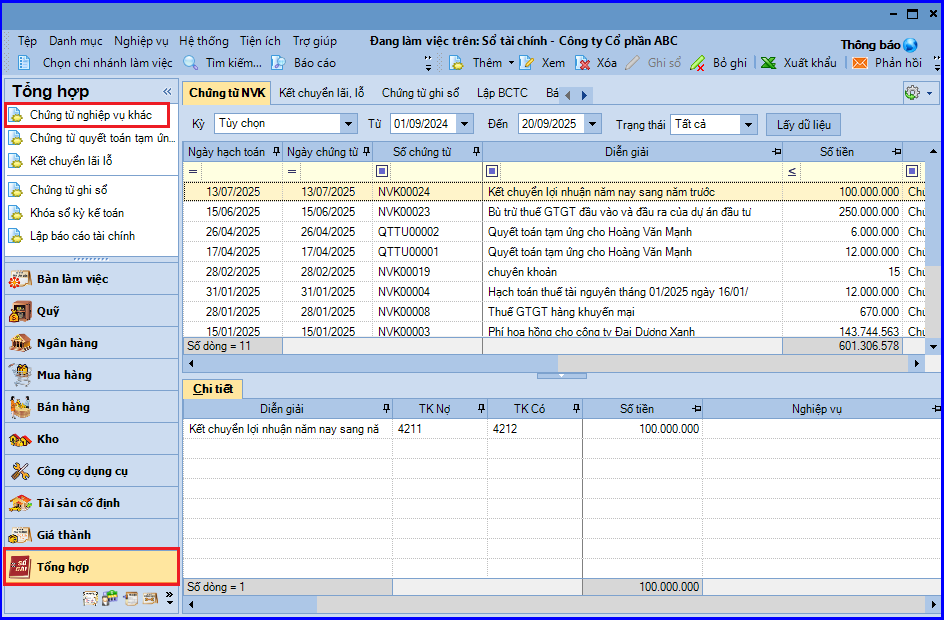
- Khai báo chứng từ mua CCDC.
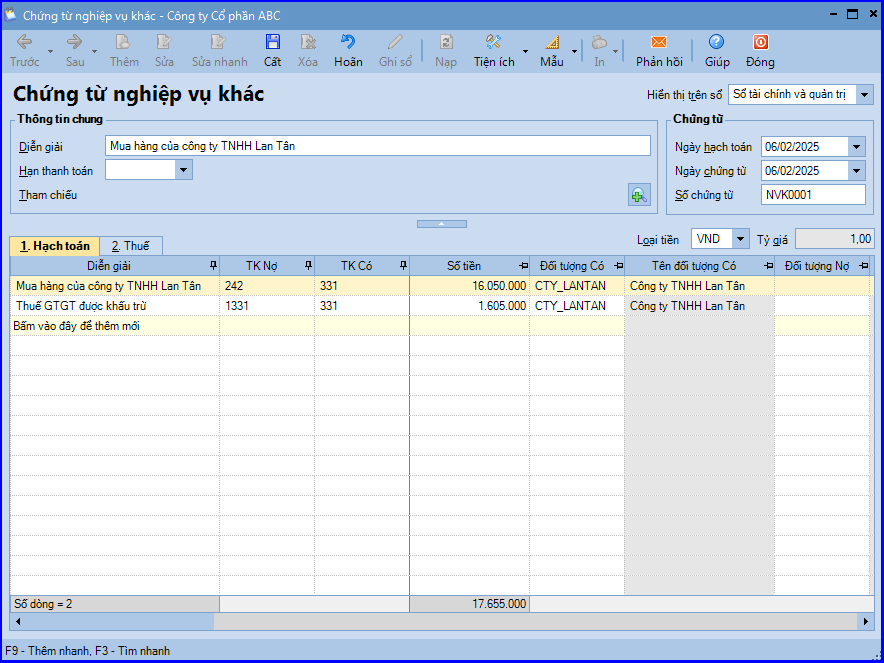
- Các bạn ấn "Cất".
Bước 2: Ghi tăng CCDC vào sổ theo dõi CCDC
- Vào phân hệ "Công cụ dụng cụ" => ấn "Ghi tăng CCDC hàng loạt" (hoặc có thể ấn "Ghi tăng để khai báo lần lượt từng CCDC").
- Khai báo các thông tin về CCDC được mua về.
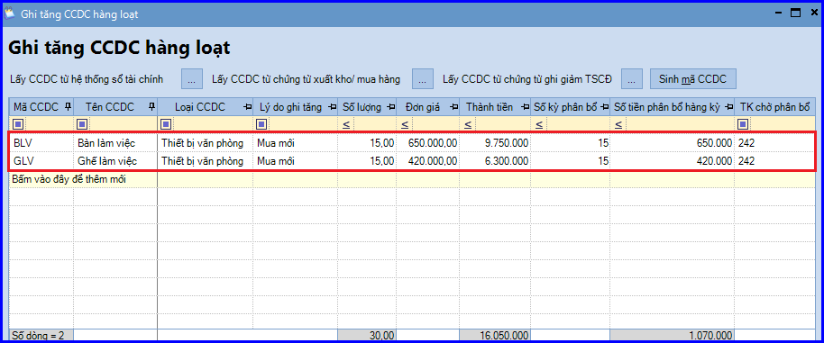
- Khai báo đơn vị sử dụng CCDC và số lượng CCDC sử dụng ở từng đơn vị (thực hiện tuần tự với từng CCDC được ghi tăng).
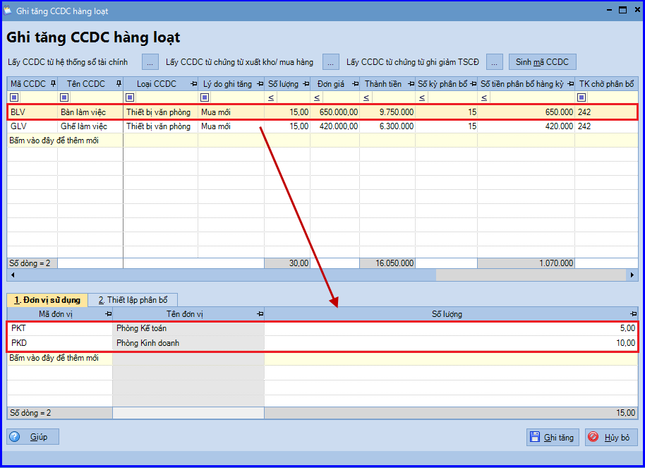
- Thiết lập thông tin phân bổ CCDC như: đối tượng phân bổ, tỷ lệ phân bổ, tài khoản chi phí => Chương trình đã tự động thiết lập sẵn dựa vào thông tin đã khai báo tại tab "Đơn vị sử dụng", tuy nhiên Kế toán vẫn có thể thay đổi lại theo đúng với thực tế tại đơn vị.

- Các bạn ấn "Ghi tăng".
Chú ý: Trường hợp muốn quản lý các bộ phận cấu thành nên CCDC hoặc chọn các chứng từ liên quan đến việc ghi tăng CCDC, cần khai báo lần lượt từng CCDC trên chứng từ Ghi tăng CCDC (vào phân hệ "Công cụ dụng cụ" => chọn "Ghi tăng" => sau đó khai báo thông tin trên tab "Mô tả chi tiết" và "Nguồn gốc hình thành").
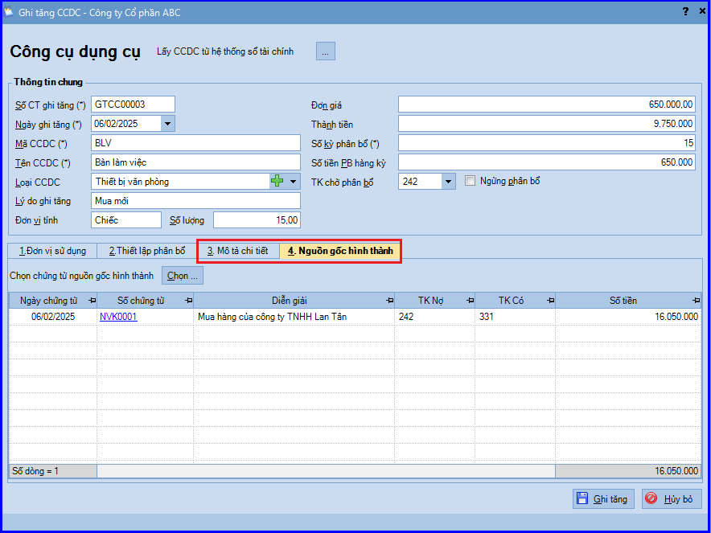
Trường hợp doanh nghiệp có nhu cầu quản lý CCDC như một mã Vật Tư Hàng Hóa
Với các doanh nghiệp có nhu cầu quản lý CCDC như một mã VTHH, việc ghi tăng CCDC được thực hiện thông qua 2 bước sau:
Bước 1: Hạch toán nghiệp vụ mua CCDC
- Vào phân hệ "Mua hàng" => chọn "Chứng từ mua hàng hoá" (hoặc vào tab "Mua hàng hóa, dịch vụ" => ấn "Thêm").
- Chọn loại chứng từ là Mua hàng trong nước không qua kho (hoặc Mua hàng nhập khẩu không qua kho).
- Khai báo chứng từ mua CCDC.
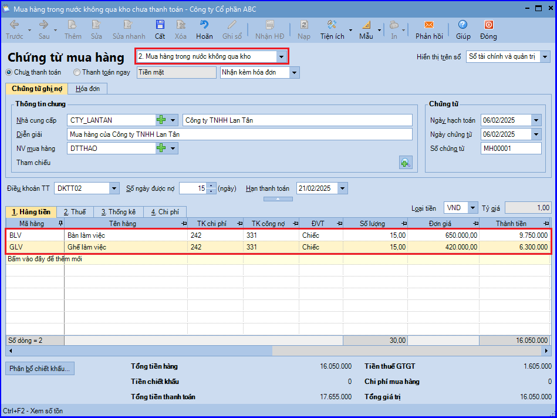
- Các bạn ấn "Cất".
Bước 2: Ghi tăng CCDC vào sổ theo dõi CCDC
- Vào phân hệ "Công cụ dụng cụ" => chọn "Ghi tăng CCDC hàng loạt" (hoặc vào menu "Nghiệp vụ" => "Công cụ dụng cụ" => "Ghi tăng CCDC hàng loạt").
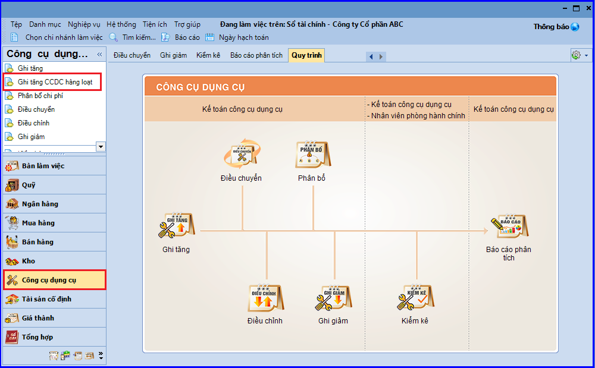
- Các bạn ấn "Lấy CCDC" từ "Chứng từ xuất kho/mua hàng".
- Thiết lập điều kiện tìm kiếm chứng từ mua hàng không qua kho đã lập ở bước 1 => ấn "Lấy dữ liệu".
- Tích chọn các CCDC được ghi tăng.
- Các bạn ấn "Chọn" => chương trình sẽ tự động lấy thông tin CCDC từ chứng từ mua hàng sang chứng từ ghi tăng.
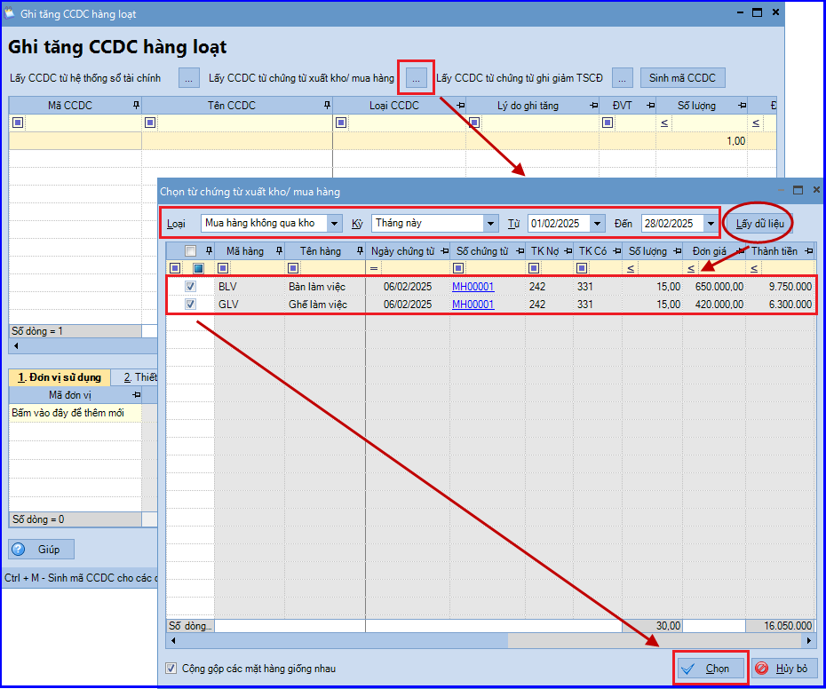
- Khai báo các thông tin như: loại CCDC, lý do ghi tăng, số kỳ phân bổ,…
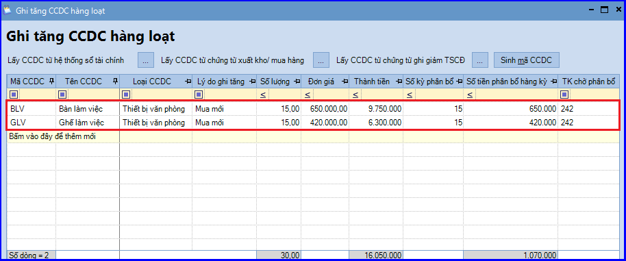
- Khai báo đơn vị sử dụng CCDC và số lượng CCDC sử dụng ở từng đơn vị (thực hiện tuần tự với từng CCDC được ghi tăng).
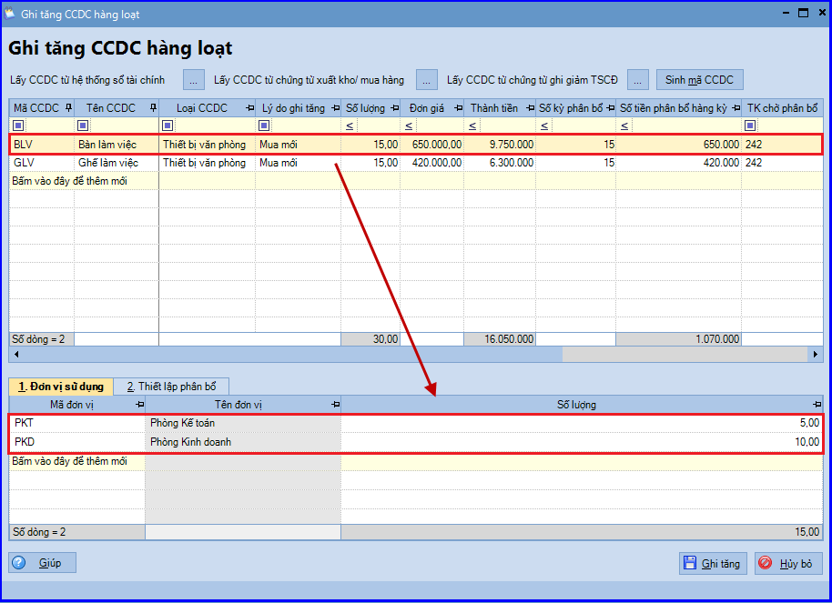
- Thiết lập thông tin phân bổ CCDC như: đối tượng phân bổ, tỷ lệ phân bổ, tài khoản chi phí => Phần mềm đã tự động thiết lập sẵn dựa vào thông tin đã khai báo tại tab "Đơn vị sử dụng", tuy nhiên Kế toán vẫn có thể thay đổi lại theo đúng với thực tế tại đơn vị.
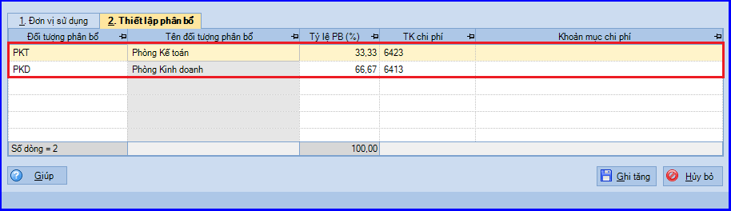
- Các bạn ấn "Ghi tăng".
CHÚ Ý:
- Định kỳ, Kế toán sẽ căn cứ vào số kỳ phân bổ đã thiết lập khi ghi tăng CCDC, để thực hiện phân bổ giá trị của CCDC vào chi phí của đơn vị.
- Đối với dữ liệu hạch toán đa chi nhánh và sử dụng cả hai hệ thống sổ (tài chính và quản trị), CCDC được ghi tăng khi đang làm việc tại chi nhánh nào, sổ nào sẽ chỉ được lưu trên chi nhánh đó và sổ đó. Trường hợp muốn lấy thông tin CCDC đã khai báo từ sổ này sang sổ khác, Kế toán có thể sử dụng chức năng:
- Lấy từng CCDC từ hệ thống sổ quản trị (hoặc ngược lại).
- Lấy hàng loạt CCDC từ hệ thống sổ quản trị (hoặc ngược lại).
KẾ TOÁN DIỆU TÂM chúc các bạn làm tốt!
=============================
Nếu bạn muốn thành thạo các kỹ năng làm kế toán trên phần mềm Misa
Thì bạn có thể tham khảo "Khóa Học Thực Hành Kế Toán Trên Phần Mềm Misa" tại Công ty đào tạo Kế Toán Diệu Tâm
Trong khóa học này, bạn sẽ được dạy cách lên sổ sách, lập báo cáo tài chính trên phần mềm Misa
Chi tiết về chương trình đào tạo bạn xem tại đây nhé: Khóa học thực hành kế toán trên Misa
=============================
=============================
Nếu bạn muốn thành thạo các kỹ năng làm kế toán trên phần mềm Misa
Thì bạn có thể tham khảo "Khóa Học Thực Hành Kế Toán Trên Phần Mềm Misa" tại Công ty đào tạo Kế Toán Diệu Tâm
Trong khóa học này, bạn sẽ được dạy cách lên sổ sách, lập báo cáo tài chính trên phần mềm Misa
Chi tiết về chương trình đào tạo bạn xem tại đây nhé: Khóa học thực hành kế toán trên Misa
=============================